모드는 무엇을 바꾸나요
게임에 모드를 깔면 같은 게임이 전혀 다른 게임이 되죠. 클로드 코드의 모드도 같은 발상이에요. 화면과 버튼은 물론 클로드가 일하는 방식까지 내 마음대로 바꿀 수 있어요. 영상은 모드를 한마디로 '클로드 코드가 보이는 모습과 행동 방식을 바꾸는 작은 프로그램'이라고 소개해요.
영상 앞부분에 모드가 실제로 어떻게 보이는지 짧게 나와요. 입력창 바로 위 띠에 우산 아이콘과 'Showers 54% of context'가 떠 있어요. 컨텍스트가 절반 넘게 찼다는 걸 날씨로 알려 주는 모드예요. 영상은 뒤에서 이 모드를 직접 만들어요.
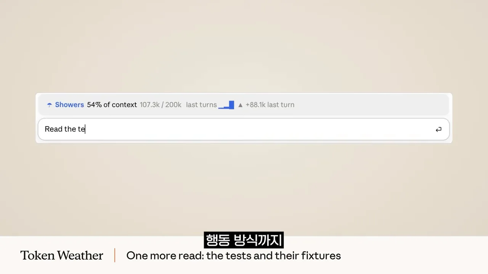
모드로 할 수 있는 일
슬라이드는 모드로 할 수 있는 일을 세 가지로 정리해요. 노란 테두리를 친 1번이 클로드가 일할 때 옆에 원하는 정보 창을 띄우는 것이에요. 2번은 위험한 작업 전에 '진짜 할까요?' 확인 버튼을 띄우는 것, 3번은 나만의 명령어를 새로 추가하는 것이에요.
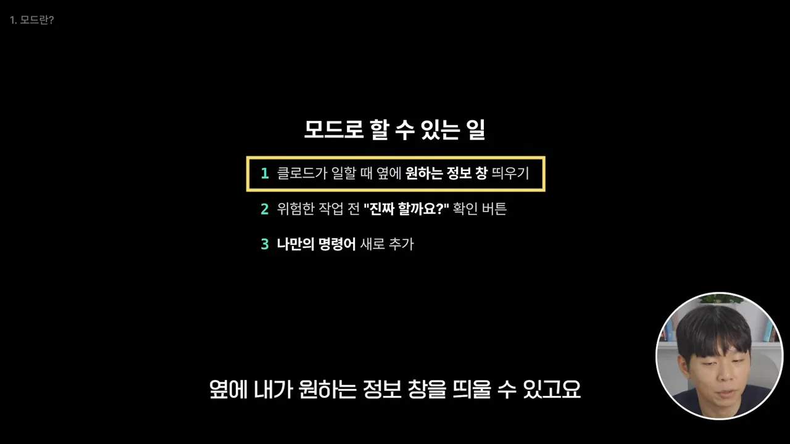
모드는 2026년 9월에 일부 개발자에게 먼저 공개돼 테스트를 거쳤어요. 그리고 10월 1일에 Anthropic이 공식 발표했어요.
신호를 먼저 받는 구조
원리는 단순해요. 클로드 코드는 무언가 할 때마다 '지금 이거 해요'라는 신호를 내보내요. 슬라이드 왼쪽 노란 칸에 세 가지 예가 있어요. 파일 읽기는 tool.call (Read), 명령 실행은 tool.call (Bash), 화면 그리기는 ui.render예요. 이 신호는 가운데 Mods 상자를 먼저 거치고 나서야 오른쪽 '실제 실행'으로 가요.
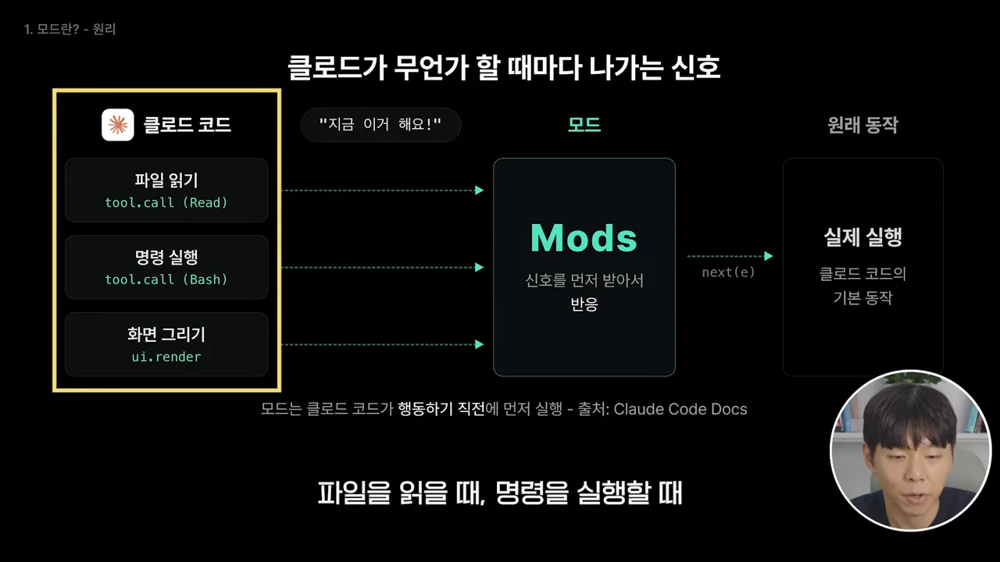
신호를 받은 모드는 세 가지 중 하나를 해요. 그냥 지켜보거나, 살짝 고치거나, 아예 대신 처리해요. 슬라이드는 이를 카드 세 장으로 보여 줘요.
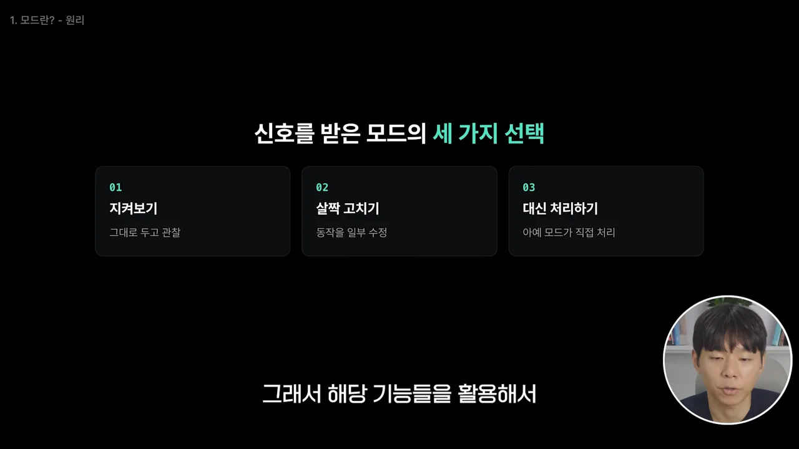
두 슬라이드를 합쳐 그리면 차이가 잘 보여요. 지켜보기와 살짝 고치기는 원래 동작까지 신호를 넘겨요. 대신 처리하기만 원래 동작으로 가지 않고 모드가 직접 끝내요.
스킬·MCP와 무엇이 다른가요
클로드에 능력을 더하는 방법은 이미 몇 가지 있어요. 스킬과 MCP가 대표적이죠. 슬라이드는 이 둘과 모드를 위치, 방식, 창과 버튼을 만들 수 있는지로 비교해요. 오른쪽 노란 칸이 모드 쪽이에요.
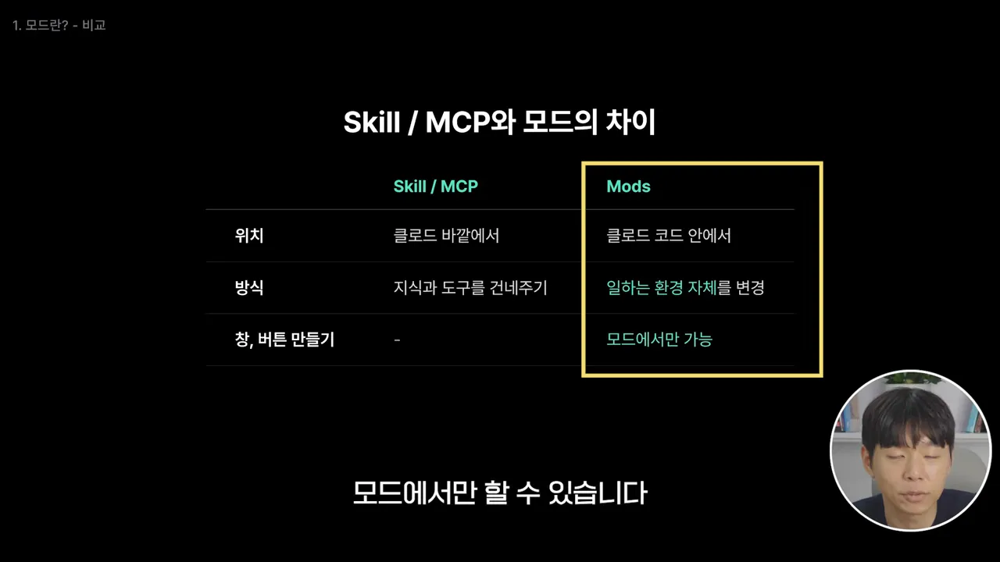
코드를 몰라도 만들 수 있어요
모드는 원래 TypeScript라는 프로그래밍 언어로 짜요. 영상은 여기서 걱정하지 않아도 된다고 짚어요. 다음 슬라이드의 왼쪽 '원래는' 칸이 TypeScript로 직접 쓰던 방식이에요. 오른쪽 '오늘은' 칸에는 클로드 코드 안에 있는 모드 제작 전용 스킬이 적혀 있어요. 말로 설명하면 제작, 실행, 테스트까지 해 준다는 뜻이에요.
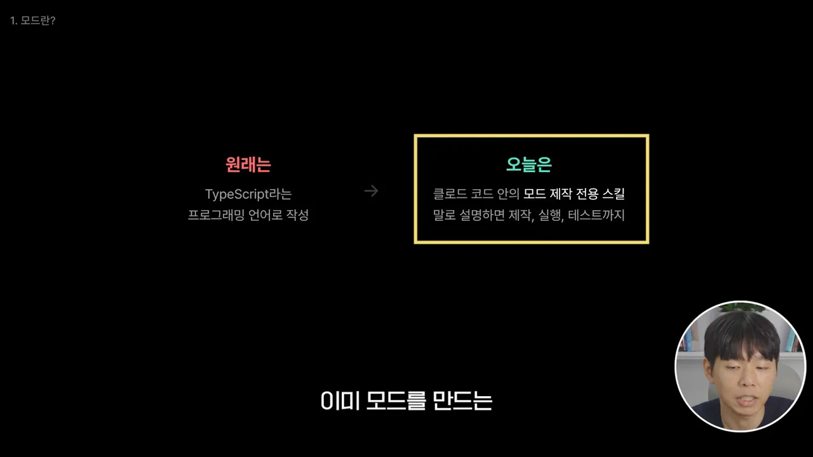
첫 모드: 컨텍스트를 날씨로 보여 주는 띠
실습은 클로드 코드 데스크탑 앱에서 해요. 터미널이 익숙하지 않은 사람도 따라 할 수 있게 고른 환경이에요. 클로드 코드는 폴더 단위로 일하니까 프로젝트 폴더부터 만들어요.
- 앱 왼쪽 위의 코드 탭을 눌러 클로드 코드로 들어가요
- 입력창 위 '로컬' 옆 버튼을 눌러 폴더 열기를 골라요 — 탐색기 창이 뜨면 새 폴더를 만들어요. 이름은 아무거나 괜찮아요. 열기를 누르면 입력창 위에 그 폴더가 작업 위치로 잡혀요
token-weather 프롬프트
첫 모드는 Anthropic 공식 문서에 소개된 프롬프트를 그대로 써요. 화면 속 프롬프트를 보면 띠에 무엇을 보여 줄지 줄마다 정해 둬요. 핵심은 둘째 줄부터예요. 컨텍스트 창이 얼마나 찼는지를 다섯 단계 날씨로 바꾸고, 단계마다 아이콘과 색을 정해요.
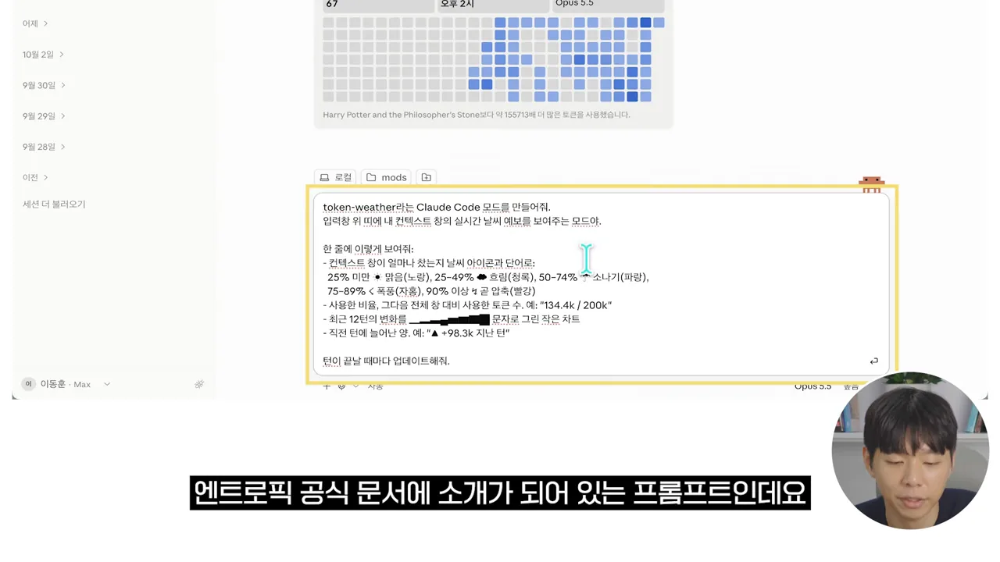
| 컨텍스트 사용량 | 띠에 뜨는 날씨 | 색 |
|---|---|---|
| 25% 미만 | 맑음 | 노랑 |
| 25~49% | 흐림 | 청록 |
| 50~74% | 소나기 | 파랑 |
| 75~89% | 폭풍 | 자홍 |
| 90% 이상 | 곧 압축 | 빨강 |
날씨 아래에는 세 가지를 더 보여 달라고 했어요. 사용한 비율과 전체 창 대비 토큰 수(예: 134.4k / 200k), 최근 12턴의 변화를 문자로 그린 작은 차트, 직전 턴에 늘어난 양(예: ▲ +98.3k 지난 턴)이에요. 그리고 턴이 끝날 때마다 새로 그리게 해요.
핫 리로딩 켜기
모드가 완성되면 'Enable hot reloading for this session?'이라는 질문이 떠요. 보기는 How does this work?, Enable for this session, Not now, 기타 네 가지예요. 원래는 모드를 설치한 뒤 데스크탑 앱을 한 번 다시 켜야 적용돼요. 핫 리로딩을 켜면 재시작 없이 지금 대화 안에서 바로 적용돼요.
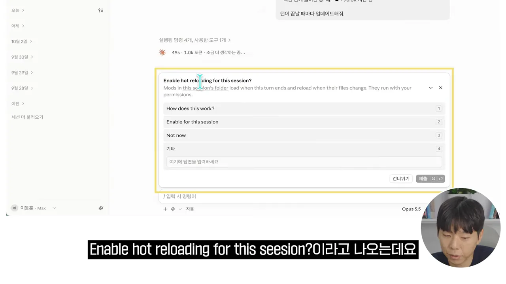
이어서 잘 보이는지 확인해 달라고 하면, 채팅을 보낸 뒤 핫 리로딩이 실행돼요. 결과 화면에서 입력창 바로 위를 보세요. '맑음 14% 137.1k / 1M ▲+0 지난 턴' 띠가 생겼어요. 오른쪽 아래 버튼의 컨텍스트 표시와 같은 값이고, 이전 턴에 얼마나 썼는지도 한눈에 보여요.
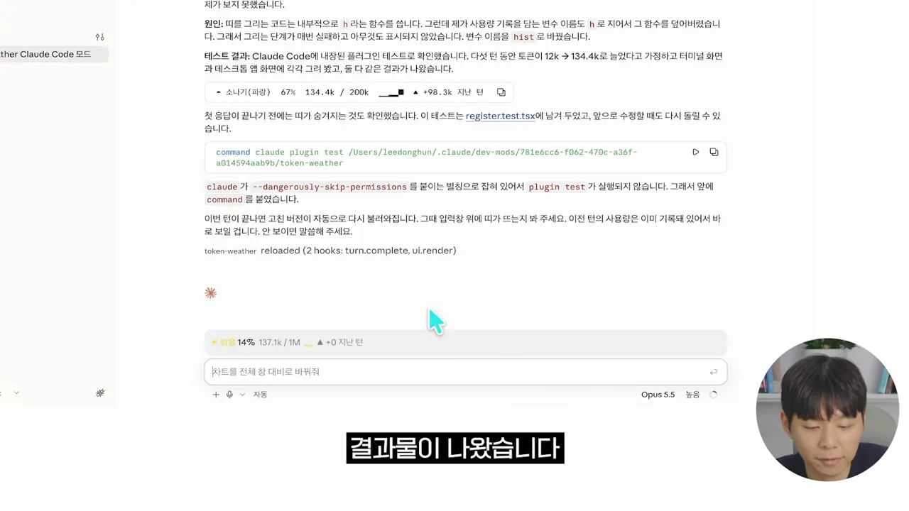
응답 내용도 눈여겨볼 만해요. 클로드는 처음에 띠가 안 뜨는 버그를 스스로 찾았어요. 띠를 그리는 함수 이름과 변수 이름이 겹쳐서였어요. 고친 뒤 플러그인 테스트로 확인하고, 그 테스트 파일도 남겨 뒀어요. 영상이 말한 '만들고 실행하고 테스트까지'가 이런 모습이에요.
모든 세션에서 쓰려면
이렇게 만든 모드는 지금 대화에서만 쓸 수 있어요. 다른 대화나 다른 프로젝트에서도 쓰려면 한 단계를 더해요. 노란 칸의 프롬프트처럼 플러그인으로 설치해 달라고 요청하면 돼요.
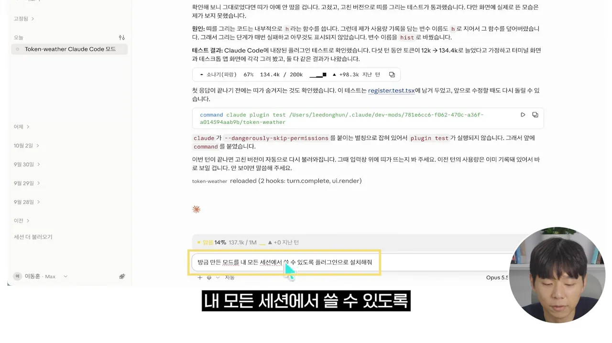
다음 할 일 카드와 픽셀 병아리
두 번째 모드는 next-steps예요. 클로드의 답변이 끝날 때마다 입력창 위에 작은 카드를 띄우고, 다음에 할 만한 일을 추천해요. 매번 다음 요청을 직접 쳐야 하는 시간을 줄이려는 모드예요. 프롬프트는 두 줄이면 충분해요. 노란 칸을 보면 턴이 끝날 때 카드를 띄우고, 방금 한 일을 바탕으로 할 일 3개를 추천하고, 하나를 누르면 그대로 실행하라고 적었어요.
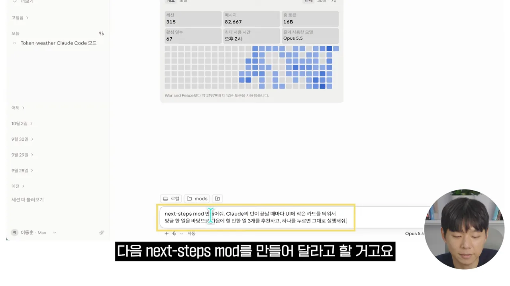
만들고 나면 클로드가 동작 방식을 정리해 줘요. 화면의 '동작 방식' 목록을 보면, 턴이 끝날 때 지금까지의 대화를 이어받아 할 일 3개를 따로 요청해요. 카드는 입력창 바로 위에 버튼 3개와 닫기 버튼으로 뜨고, 버튼을 누르면 그 문구를 바로 보내요. 아래 문단에는 추천을 만들 때마다 모델 호출이 한 번 더 생긴다고 적혀 있어요.
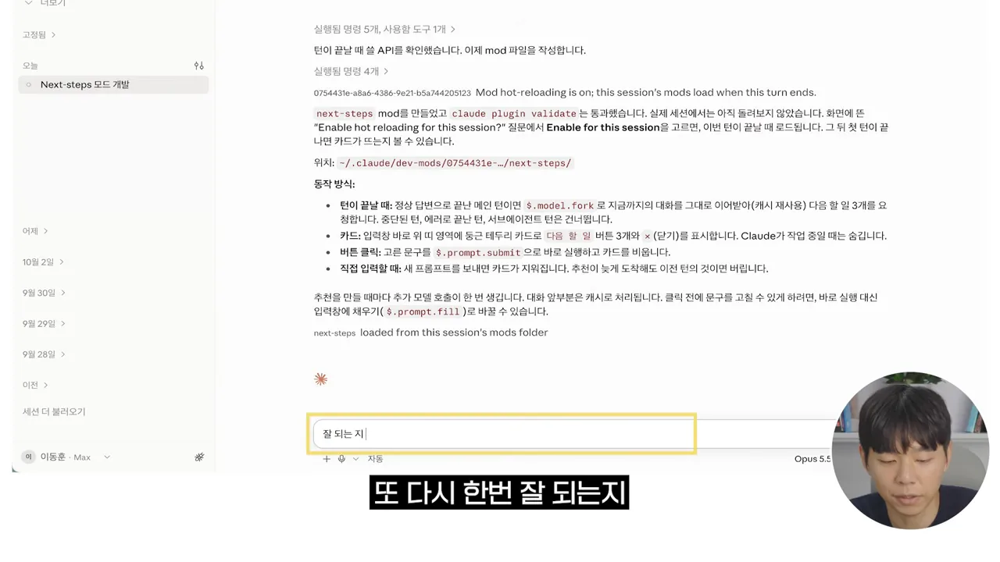
핫 리로딩을 켜고 잘 되는지 물어보면 결과 아래에 '다음 할 일' 카드가 떠요. 이번 경우에는 카드가 안 뜨면 디버그 로그 확인하기, 버튼을 누르면 바로 실행 대신 입력창에 채우게 바꾸기, 다른 세션에서도 쓰게 플러그인으로 설치하기가 추천됐어요. 하나를 고르면 바로 적용돼요.
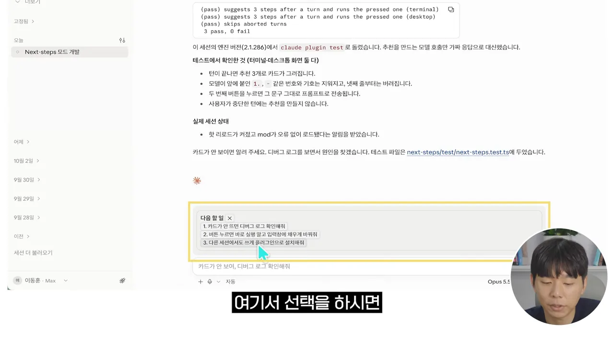
모드는 언제든 이어서 고칠 수 있어요. 카드 디자인을 바꾸거나, 추천을 만드는 모델을 바꿔 달라고 하면 돼요.
그냥 귀여운 모드: 픽셀 병아리
세 번째는 생산성과 상관없는 pixel-chick 모드예요. 입력창 위에 픽셀 병아리 한 마리가 계속 돌아다니는 게임 같은 모드예요. 이번 프롬프트는 규칙이 꽤 자세해요. 무대는 64×12픽셀, 병아리는 8×7픽셀에 노란 몸과 주황 부리예요. 0.25초마다 한 칸씩 걷기, 뛰기, 쉬기, 밥 먹기 중 하나를 골라요. 바닥에는 잔디를 깔고, 하늘은 2분마다 낮과 밤이 바뀌어요.
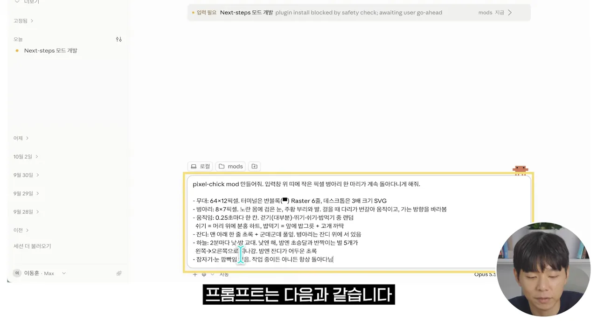
결과 화면 아래쪽 노란 칸을 보면 입력창 위 잔디 위에 작은 병아리와 해가 떠 있어요. 위쪽 응답의 'Checked installed pixel-chick matches the prompt spec'은 만든 모드가 프롬프트 규칙과 맞는지 클로드가 확인했다는 뜻이에요.
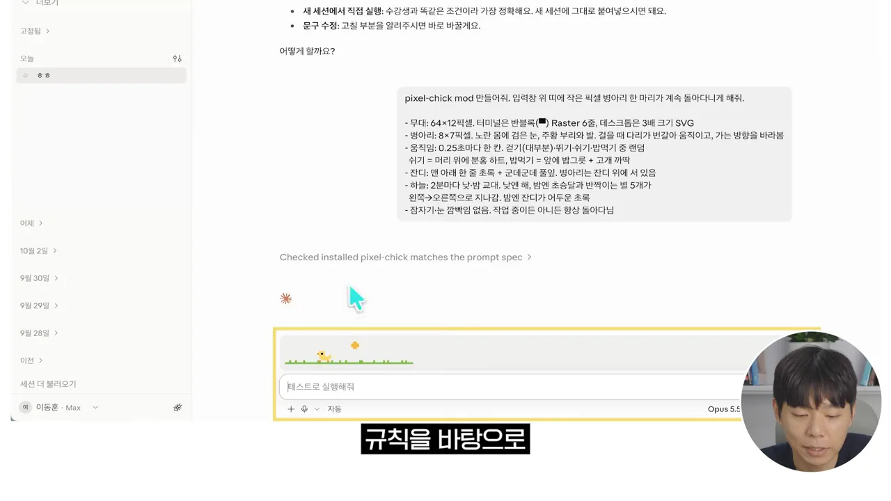
지금까지 만든 세 모드를 나란히 놓으면 이래요.
| 모드 | 어디에 뜨나요 | 언제 바뀌나요 | 무엇을 해 주나요 |
|---|---|---|---|
token-weather | 입력창 위 띠 | 턴이 끝날 때마다 | 컨텍스트 사용량을 날씨로 보여 줘요 |
next-steps | 입력창 위 카드 | 턴이 끝날 때마다 | 다음 할 일 3개를 추천하고, 누르면 실행해요 |
pixel-chick | 입력창 위 띠 | 0.25초마다 | 병아리가 돌아다녀요 |
내 사용 기록으로 모드 추천받기
지금까지는 영상이 준 프롬프트로 모드를 만들었어요. 마지막 실습은 내 사용 패턴을 분석해서 모드를 추천받는 방법이에요. 프롬프트는 노란 칸의 네 줄이에요. 세션 로그를 최대한 많이 훑어보고, 내가 클로드 코드를 어떻게 쓰는지와 자주 반복하는 말이나 작업을 파악해 달라고 해요. 그걸 바탕으로 흐름을 돕고, 돈을 아끼고, 더 빠르고 정리된 상태로 일하게 해 줄 모드 다섯 개를 추천해 달라고 해요.
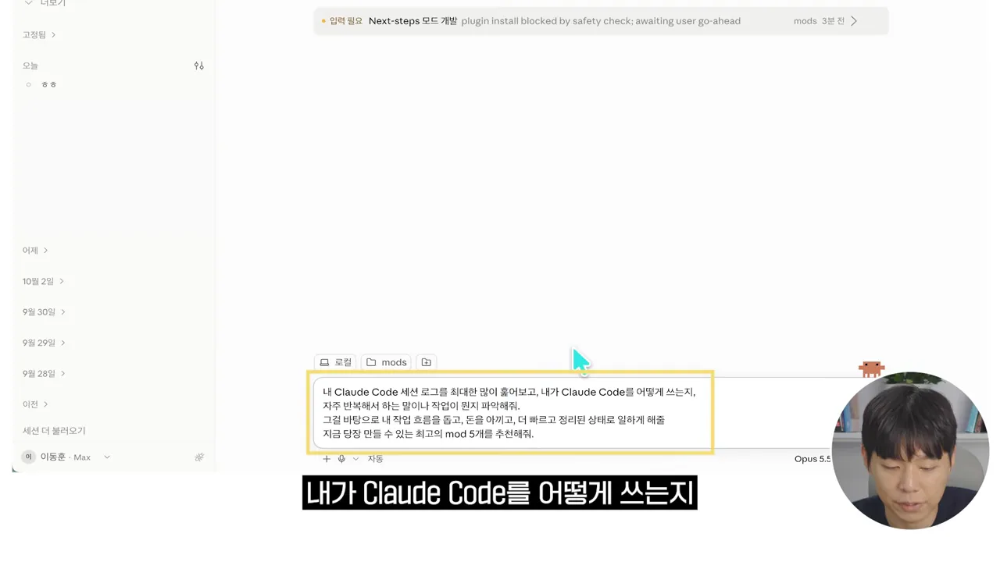
결과는 먼저 무엇을 봤는지부터 밝혀요. 화면 맨 위 문장을 보면 로그 1,045개(본 세션 342개, 서브에이전트 703개)와 직접 입력한 프롬프트 1,238개를 봤어요. 기간은 2026년 7월 2일부터이고, 실제로 작업한 날은 64일이에요. 그 아래 '로그에서 보인 사용 패턴' 표가 패턴마다 근거 숫자를 붙여 줘요.
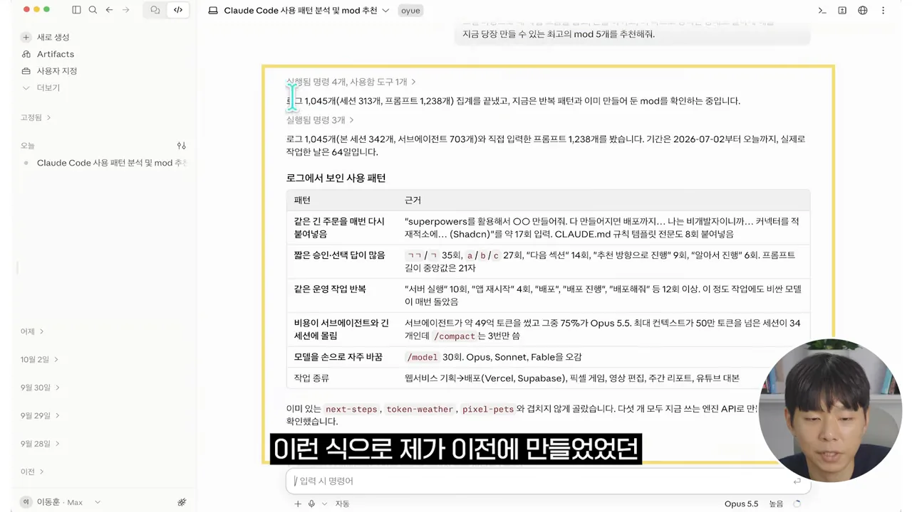
표에서 눈에 띄는 패턴만 추리면 이래요. 같은 긴 주문을 약 17번 다시 붙여 넣었어요. 'ㄱㄱ' 같은 짧은 승인 답이 35번, a/b/c 선택 답이 27번이었어요. 서버 실행이나 배포 같은 간단한 운영 작업에도 매번 비싼 모델이 돌았어요. 비용은 서브에이전트와 긴 세션에 몰렸고, /model로 모델을 손으로 30번 바꿨어요.
추천받은 모드 다섯 개
이 패턴을 바탕으로 추천 모드 다섯 개가 나와요. 화면 노란 칸에서 각 이름 옆 괄호를 보세요. 속도, 비용, 정리 중 무엇을 위한 모드인지 적혀 있어요.
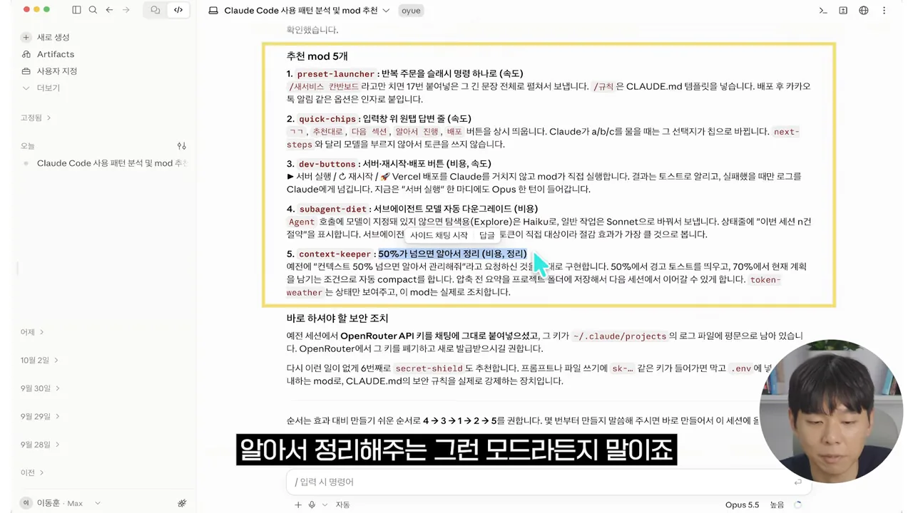
| 추천 모드 | 하는 일 | 해결하는 패턴 |
|---|---|---|
preset-launcher | 반복 주문을 슬래시 명령 하나로 펼쳐 보내요 | 같은 긴 주문을 매번 붙여 넣음 |
quick-chips | 입력창 위에 'ㄱㄱ', '추천대로' 같은 원탭 버튼을 늘 띄워요 | 짧은 승인·선택 답이 많음 |
dev-buttons | 서버 실행, 재시작, 배포를 클로드를 거치지 않고 모드가 직접 실행해요 | 같은 운영 작업 반복 |
subagent-diet | 모델을 정하지 않은 서브에이전트를 더 싼 모델로 보내요 | 비용이 서브에이전트에 몰림 |
context-keeper | 컨텍스트가 50%를 넘으면 경고하고, 70%에서 자동으로 압축해요 | 긴 세션 |
quick-chips 설명에는 next-steps와 달리 모델을 부르지 않아 토큰을 쓰지 않는다고 적혀 있어요. 앞에서 본 next-steps는 추천할 때마다 모델을 한 번 더 불렀죠. 같은 '입력창 위 버튼'이어도 비용이 다를 수 있다는 점이 보여요.
목록 아래에는 '바로 하셔야 할 보안 조치'도 붙어 있어요. 예전 세션에서 API(Application Programming Interface) 키를 채팅에 그대로 붙여 넣었고, 그 키가 로컬 로그 파일에 평문으로 남아 있다는 경고예요. 키를 새로 발급받으라고 권하고, 키가 들어가면 막아 주는 여섯 번째 모드 secret-shield도 추천했어요. 로그 분석이 비용뿐 아니라 보안 구멍까지 찾아 준 셈이에요.
마음에 드는 모드가 있으면 '4번 만들어 줘'처럼 번호로 요청하면 돼요. 앞의 실습과 같은 과정을 거쳐 내 사용 패턴에 맞춘 모드가 만들어져요.